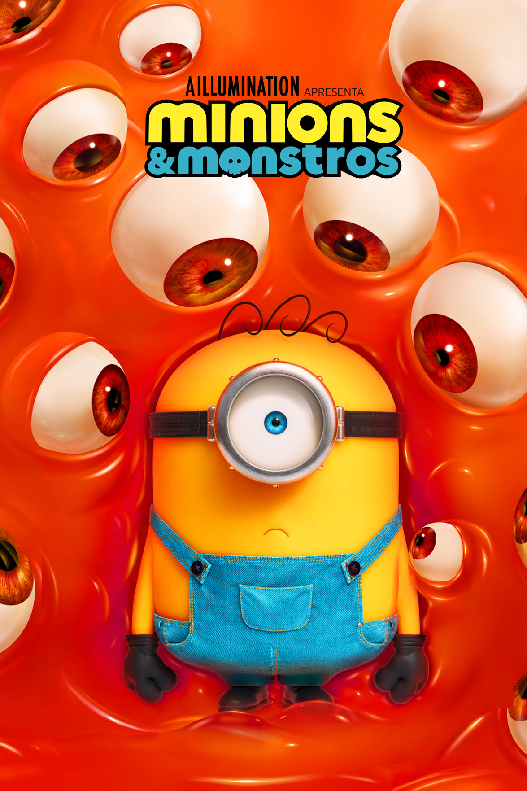

Destaque da Semana

Minions & Monstros
Ano: 2026
Insatisfeito em ser apenas mais um membro da tribo a serviço de um chefe, James sonha em fazer filmes. Na busca por esse desejo, James sem querer liberta uma série de monstros e uma gangue de criaturas com planos de destruir o mundo. Junto dele, os outros minions têm que encontrar as horripilantes criaturas para viverem as cenas do filme de James.
Gêneros:
- Ação
- Aventura
- Comédia
🍿 Nosso Catálogo
Escolha um filme e aproveite!
Filmes encontrados: 0
♥ Meus Favoritos
Quantidade de favoritos: 0
Avaliações dos Filmes
| Filme | Ano | Nota | Status |
|---|---|---|---|
| Sonic 3 | 2024 | 7.6 | Popular |
| Super Mario Galaxy: O Filme | 2026 | 6.2 | Popular |
| Oppenheimer | 2023 | 8.6 | Premiado |
| Sorria | 2022 | 6.5 | Terror |
| Invocação do Mal | 2013 | 7.5 | Clássico |
| Corra! | 2017 | 7.8 | Popular |
Gêneros de Filmes
- Ação
- Aventura
- Animação
- Comédia
- Terror
- Suspense
- Drama
Sobre o Projeto

O Cinema Astral é um catálogo de filmes criado como atividade prática disponibilizada pelo nosso Professor Perteson, ensinando conceitos de HTML, CSS e JavaScript.
O objetivo é colocar em prática os conhecimentos de HTML, CSS e JavaScript, utilizando imagens, cores, bordas, listas, tabelas, links, arrays, funções e manipulação do DOM.